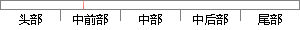

二维碳材料， 尤其是 石墨烯 的研究热潮 。石墨烯 可以通过 石墨烯
片段位置图

相似结果
相似片段：
碳材料。 还原氧化 Reduced oxide of graphenes 还原氧化石墨烯是指（通过化学或热处理等方法）不完全去除氧化石墨烯中的含氧官能团（基团）后得到的一种二维碳材料。 功能化石墨烯 Functionalized graphenes 功能化石墨烯是指在石墨烯中含有异质原子/分子（如氢、氟、含氧基团等表面修饰成键，氮、硼等元素替位掺杂, 异质原子/分子插层等）的一种二维碳材料。 石墨烯微片 石墨
| 对比库： | WriteCheck云资源库 |
| 来源： | baike.sogou.com 查看来源 |
| 发布时间： | 2016-06-03 |
| 相似率 | 57.14% （轻度抄袭） |